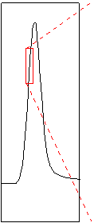
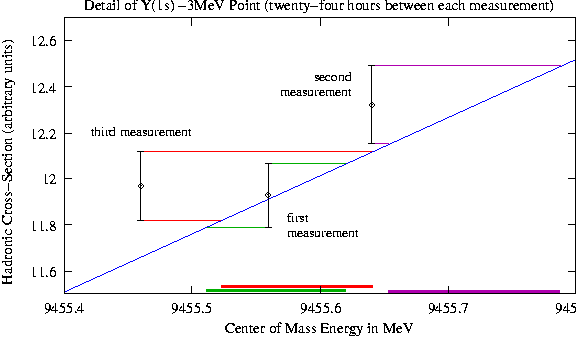

Dilepton Widths of Y(1s), Y(2s) and Y(3s)
Jim Pivarski
Energy shifts can be bounded by looking at repeated measurements of a high-slope scan point.


The largest energy calibration jump ever seen was 0.5 MeV.
There is room for improving this bound with detailed NMR probe logs.